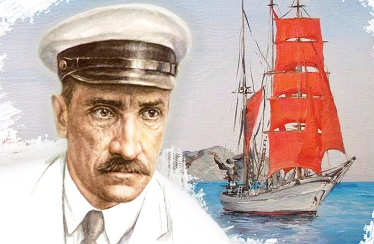

Детство и Юность
Русский писатель. Грин родился 23 августа (по старому стилю - 11 августа) 1880 года в Слободском, уездном городке Вятской
губернии, в семье "вечного поселенца" - ссыльного поляка-повстанца, сосланного 16-летним юношей в Сибирь за участие в
Польском восстании 1863 и служащего конторщиком на пивоваренном заводе. Мать - русская; умерла, когда Грину было 13 лет.
Вскоре после рождения сына семья Гриневских переехала в Вятку. "Я не знал нормального детства, - писал Грин в своей
"Автобиографической повести", - меня в минуты раздражения, за своевольство и неудачное учение, звали "свинопасом",
"золоторотцем", прочили мне жизнь, полную пресмыкания у людей удачливых, преуспевающих". Объясняя происхождение своего
литературного псевдонима, Грин говорил, что "Грин!" - так коротко окликали ребята Гриневского в школе, а "Грин-блин" -
была одна из его детских кличек. Летом 1896, после окончания четырехклассного Вятского городского училища, Грин уехал в
Одессу, захватив с собой лишь ивовую корзинку со сменой белья да акварельные краски. В Одессу он попал с шестью рублями
в кармане. Худенький, узкоплечий, он закалял себя самыми варварскими средствами, учился плавать за волнорезом, где тонули
и опытные пловцы. Голодный, оборванный, в поисках "вакансии" он обходил все стоящие в гавани шхуны. В первом плавании, на
транспортном судне "Платон" он впервые увидел берега Кавказа и Крыма. Матросом Грин плавал недолго, - после первого или
второго рейса его обычно списывали за непокорный нрав. Позднее был лесорубом и золотоискателем на Урале. Весной 1902 юноша
очутился в Пензе, в царской казарме. Из казенного описания его наружности той поры: рост - 177,4, глаза - светло-карие,
волосы - светло-русые; особые приметы: на груди татуировка, изображающая шхуну с бушпритом и фок-мачтой, несущей два паруса.
Ссылки и талант
Искатель чудесного, бредящий морем и парусами, попадает в 213-й Оровайский резервный пехотный батальон, где царили самые
жестокие нравы, впоследствии описанные Грином в рассказах "Заслуга рядового Пантелеева" и "История одного убийства".
Через четыре месяца "рядовой Александр Степанович Гриневский" бежит из батальона, несколько дней скрывается в лесу, но
его ловят и приговаривают к трехнедельному строгому аресту "на хлебе и воде". Пензенские эсеры помогают ему бежать из
батальона вторично, снабдив фальшивым паспортом и переправляют в Киев. Оттуда он перебрался в Одессу, а затем в Севастополь
. За пропагандистскую деятельность в Севастополе он поплатился тюрьмой и ссылкой. После освобождения из севастопольского
каземата Грин уезжает в Петербург и там вскоре опять попадает в тюрьму. Грина ссылают на 4 года в г.Туринск, Тобольской
губернии. После прибытия туда "этапным порядком" Грин бежит из ссылки и добирается до Вятки. Отец достает ему паспорт
недавно умершего в больнице "личного почетного гражданина" А.А. Мальгинова и Грин возвращается в Петербург, чтобы спустя
несколько лет, в 1910 году, опять отправиться в ссылку, на этот раз в Архангельскую губернию. Тюрьмы, ссылки, вечная нужда...
Недаром говорил Грин, что его жизненный путь был усыпан не розами, а гвоздями... В Петербург возвратился в мае 1912. Влившись
в петербургские литературные круги, сотрудничал во многих журналах. В 1916 в Петрограде начал писать "повесть-феерию" "Алые паруса".
С конца 1916 вынужден был скрываться в Финляндии, но, узнав Февральской революции, вернулся в Петроград. В 1919, из Петрограда был
призван в Красную армию, где служил связистом. В 1920 тяжелобольного Грина, заболевшего сыпным тифом, привезли в Петроград, где с
помощью М.Горького ему удалось получить академический паек и комнату в "Доме искусств".
Первые произведения
Отец рассчитывал, что из его старшего сына, в котором учителя видели завидные способности, выйдет непременно инженер или доктор,
потом он соглашался уже на чиновника, на худой конец, на писаря, жил бы только "как все", бросил бы "фантазии"... Первый рассказ
"Заслуга рядового Пантелеева" (агитброшюра за подписью А.С.Г. была написана в 1906) был конфискован и сожжен охранкой. Первые
публикации (рассказы) были в 1906, в Петербурге. Подпись "А.С. Грин" впервые появилась в 1908 под рассказом "Апельсины" (по
другим сведениям - под рассказом "Случай" в 1907). В 1908 вышел первый сборник "Шапка-невидимка" с подзаголовком "Рассказы о
революционерах". Не только в юности, но и в пору широкой известности Грин, наряду с прозой, писал лирические стихи, стихотворные
фельетоны и даже басни. Закончив роман "Блистающий мир", весной 1923 года Грин едет в Крым, к морю, бродит по знакомым местам,
живет в Севастополе, Балаклаве, Ялте, а в мае 1924 года поселяется в Феодосии - "городе акварельных тонов". В ноябре 1930 года,
уже больной, он переезжает в Старый Крым. Умер Грин 8 июля 1932 года в Феодосии. В 1970 в Феодосии был создан
литературно-мемориальный музей Александра Грина.
Прочие произведения
Среди произведений - стихотворения, поэмы, сатирические миниатюры, басни, очерки, новеллы, рассказы, повести, романы: "Случай"
(1907, рассказ), "Апельсины" (1908, рассказ), "Остров Рено" (1909, рассказ), "Колония Ланфиер" (1910, рассказ), "Зимняя сказка"
(1912, рассказ), "Четвертый за всех" (1912, рассказ), "Проходной двор" (1912, рассказ), "Зурбаганский стрелок" (1913, рассказ),
"Капитан Дюк" (1915, рассказ), "Алые паруса" (1916, опубликована 1923, повесть-феерия), "Пешком на революцию" (1917, очерк),
"Восстание", "Рождение грома", "Маятник души", "Корабли в Лиссе" (1918, опубликован 1922, рассказ), "Крысолов"
(опубликован 1924, рассказ на тему послереволюционного Петрограда), "Сердце пустыни" (1923), "Блистающий мир"
(1923, опубликован 1924, роман), "Фанданго" (опубликован 1927, рассказ на тему послереволюционного Петрограда),
"Бегущая по волнам" (1928, роман), "Ветка омелы" (1929, рассказ), "Зеленая лампа" (1930, рассказ), "Дорога никуда"
(1930, роман), "Автобиографическая повесть" (1931).